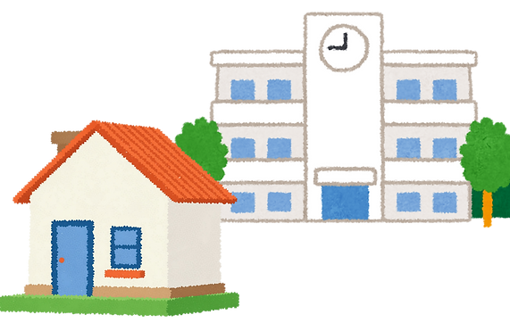
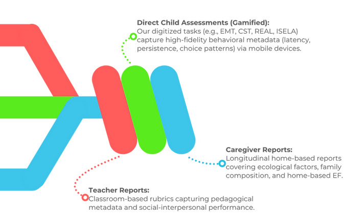
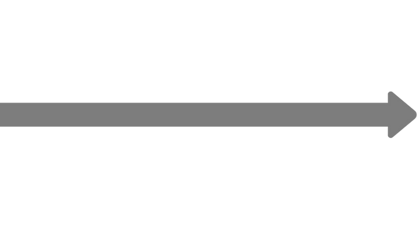

Tilli Measures!
The 360-degree
Foundational Skills Dataset
Unlocking longitudinal, multi-informant insights into cognitive and social-emotional development for non-WEIRD populations.
The Problem: "Data Blindness" in AI
1. Sparse Outcomes
Most datasets focus only on static final scores, ignoring the "process" of how a child learns.
🌍2. Isolated Data
Research is often siloed either looking at classroom performance or home environments, but never triangulating both.
🔗3. Expensive Protocols
Standardized assessments require high-cost, in-person trained assessors, leaving resource-poor communities out of the AI evolution.
💰Current educational AI models are predominantly trained on data from
W.E.I.R.D.
Western, Educated, Industrialized, Rich, and Democratic populations.
This creates a
"data blind spot" for children in
South Asia, the Middle East, and other diverse contexts.
We provide a unified view
of child development!
Across 12 core competencies, categorized into two critical domains.
6 Cognitive Skills
6 Social-Emotional Learning (SEL) Skills
Other Domain and Parameters
Academic Domain
- Math Scores
- Literacy Scores
Captures core learning outcomes through math and literacy. Math reflects problem-solving and numerical understanding, while literacy measures reading, comprehension, and expression—together indicating overall academic proficiency.
Child-Level Predictors
- Age
- Gender
- Learning gap
Focuses on individual factors affecting learning. Age reflects developmental readiness, gender helps identify disparities, and learning gaps highlight areas needing targeted support.
Ecological Predictors
Captures school and home influences, including teacher quality, resources, parental education, socioeconomic status, and access to learning materials.
Classroom
Teacher education levels · Teacher access to professional development · Zip code of the school · Material and infrastructure access of the school.
Home
Parental education levels · Home zip code · Parental socioeconomic status · Access to learning materials at home.

How We Measure:
The Triadic Assessment Protocol
We move beyond single-informant bias by capturing three perspectives for every child, using a digitized, voice-supported, and localized protocol:


Note: All data is de-identified, privacy-first, and delivered via low-bandwidth messaging platforms to ensure inclusivity.
What We Measure: Data Structure
Our dataset is composed of four interoperable CSV files linked by a unique subject_id.
Demographics & Ecology
Equity markers, home environment, family structure, and special needs status.
Direct Assessments
Behavioral interaction streams, raw latency, task-switching performance, and foundational literacy/numeracy readiness.
Caregiver Report
Home-based emotional symptoms, behavioral outcomes, and executive function ratings.
Teacher / Classroom Report
Pedagogical context, concentration/distractibility ratings, and interpersonal assessments.
AI Use Cases:
From Research to Action
1 / Predictive Intervention
Identify Grade 3 cognitive signatures that serve as early warning signs for academic struggle.
2 / Context-Aware Profiling
Use AI to weigh conflicting reports from parents vs. teachers, turning "discrepancies" into signals for better child support.
3 / Synthetic Learner Profiles
Train Generative AI (LLMs/LRMs) to simulate diverse, realistic student profiles for teacher training and curriculum stress-testing.
4 / Algorithmic Fairness Audits
Use our localized dataset to audit and improve the regional robustness of global SEL models.
Resources and More!
Technical Documentation
This guide is intended for software developers who are familiar with how web applications are built.
Link to PDF ManualsGitHub
This guide is intended for developers using GitHub who are familiar with how web applications are built.
Link to Open-source ToolkitsLicense
Creative Commons Attribution 4.0 (CC BY 4.0)
About the Team
We are a Research-Practice Partnership (RPP) involving UNICEF, Tilli Kids, and global educators committed to open-source learning engineering.